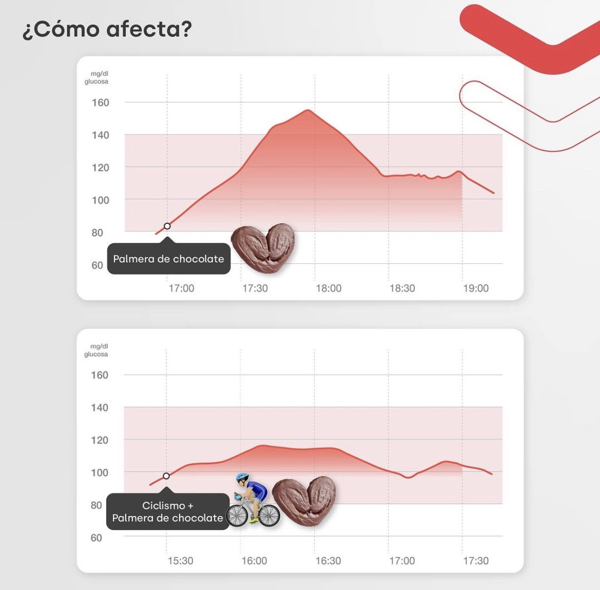

Glucosa y actividad
Mismo dulce. Distinto momento.
Una palmera de chocolate en el sofá… y otra después de pedalear.
Desliza →
Hacemos visible lo invisible
Una palmera de chocolate en el sofá… y otra después de pedalear.
Desliza →

Curvas observadas en registros reales de un Viber; la respuesta puede variar entre personas.
glucovibes.com